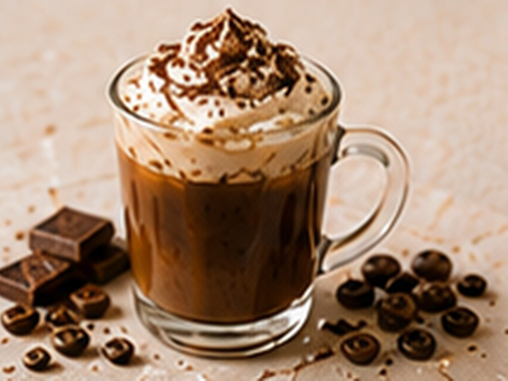

✨ KI-generiertes Bild Kaffee-CocktailsKaffee-Cocktails
French Coffee
🥃 Enthält Alkohol – nur für ErwachseneMit Grand Marnier und Orange.
⏱4 Min.
📶Mittel
☕1 Portion
🫘Zutaten
- Kaffee, stark150 ml
- Grand Marnier4 cl
- Orangenzeste1 Stück
📋Zubereitung
- 1Kaffee zubereiten.
- 2Grand Marnier dazugeben.
- 3Mit Orangenzeste garnieren.
💡
Kaffee für dieses Rezept entdeckenLeNoKo Shop
→
Kaffee-Tipp
unseren Gelben Catuai unterstützt mit seiner Zitrusnote den Orangenlikör.